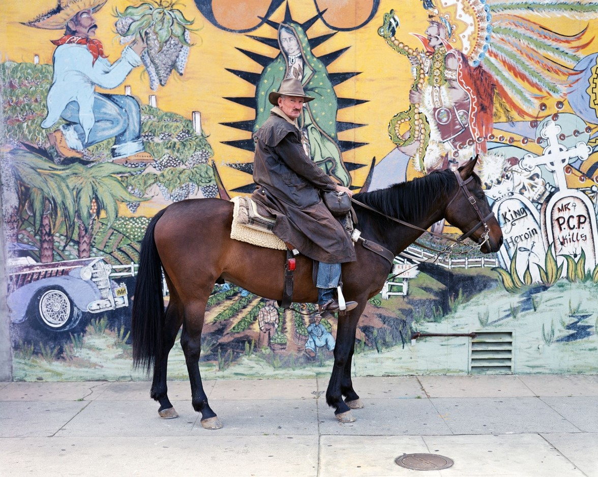

As We May Think - Bush
The reading was pretty dense, maybe to a fault. It was worth getting through all that density, however, once I got to their newly-imagined "memex." I believe the smartphone has most of the memex's features, and then some. But the memex is probably more like the modern computer desktop, without the smartphone's portability (which I imagine would've been Bush's next step from the memex). Imagine a smart device that can combine the capabilities of the desktop and the smartphone.
Comparing the article to the state of the Internet, I think Bush may have overlooked the possiblity that technological advancements in information/knowledge processing would not address knowledge that contradicts other knowledge, therefore leaving us truly inundated in information.
Long Live the Web - Berners-Lee
The Web's universality issue reminded me of the free speech issue so prevalent in our global present and past. Meanwhile, the social machine concept, which includes rating services such as Yelp, was a new concept to articulate in thought for me. Overall, the reading strongly reminded me of a reading from one of my other classes, about how the United Nations pushed a highly Americanized agenda for the free flow of information. The difference between the United Nations and the World Wide Web Consortium, however, is that the Consortium, at least, has continued to maintain their main goal of the Web, which is "to serve humanity."
